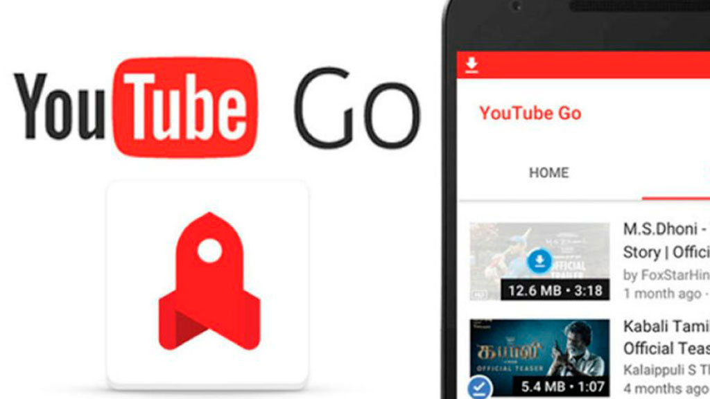
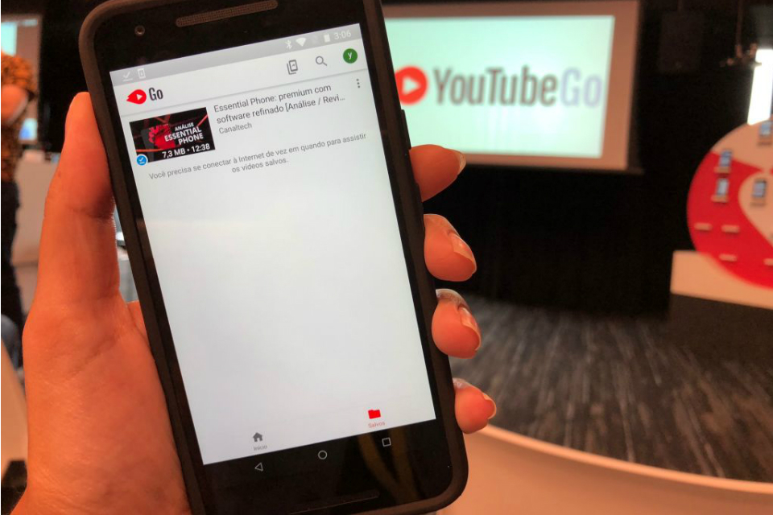

Economize sua internet: saiba como baixar os vídeos no YouTube Go
Economize sua internet: saiba como baixar os vídeos no YouTube Go
Depois de muitos testes e expectativas, finalmente o Youtube Go chegou ao Brasil. Agora, não precisa mais se preocupar em gastar a internet 3G para assistir aos vídeos da rede social: basta fazer o download.
A funcionalidade é exclusiva para celulares Android. Além de ajudar na economia da internet móvel, o usuário pode escolher a resolução da gravação quando baixar o arquivo. Assim, o vídeo não ocupa muito espaço na memória do celular.
A opção de baixar vídeo no YouTube Go não funciona muito diferente dos outros aplicativos que atuam no segmento audiovisual, como a Netflix. Resumindo: é escolher o arquivo desejado e clicar em download.
Contudo, existem dois diferenciais no aplicativo. O primeiro é que, antes de escolher o vídeo, o usuário consegue ver um trecho do conteúdo, o que pode ajudá-lo a decidir se vai baixar ou não. Já o segundo destaque é a capacidade de compartilhar um vídeo para outra pessoa, usando Bluetooth e sem gastar internet.
Como usar o YouTube Go
- Baixe o aplicativo no Google Play. Verifique se a sua conta tem seu email corretamente.
- Instale o YouTube Go no seu celular.
- Pesquise o vídeo do seu interesse.
- Ao selecionar o vídeo, você pode assisti-lo na mesma hora ou então baixar para acessar depois.
- Se optar por baixar o vídeo, você pode escolher qual é a melhor resolução para o seu celular.
- Depois de concluído, o download de vídeos já pode ser feito. Atenção: todos os arquivos são encaminhado para a pasta “Salvos”.
Pronto! Agora é só aproveitar o recurso.
Para excluir um vídeo, também é bem simples. Basta tocar sobre o botão de três pontos à direita do título e, em seguida, em “Excluir vídeo”.
Inclusão digital
O YouTube Go chega ao Brasil com a proposta de inclusão digital, por se tratar de um país com uma parcela significativa da população sem acesso a pacote de dados.
Nem todos os vídeos podem ser gravados nos smartphones dos usuários. Por direitos autorais, nenhum material musical, como clipes, áudios e shows, poderá ser baixado. Em contrapartida, qualquer vídeo sem restrições específicas poderá ser armazenado.
Mas vale lembrar que os anúncios continuarão aparecendo. Isso não significa que você encherá seu celular com anúncios, apenas que eles não serão eliminados. Não dá para conseguir tudo ao mesmo tempo, não é mesmo?
E tem mais: o mesmo algoritmo usado no YouTube foi replicado no YouTube Go. O que isso quer dizer? Simples: as sugestões de vídeos usarão os dados que o Google possui de cada usuário, inclusive localização por GPS.
O aplicativo do YouTube Go está disponível apenas para Android, e não há previsão de lançamento para o sistema iOS. Além do Brasil, países como Índia, Argentina, México, Colômbia e outros da Ásia receberam o aplicativo.